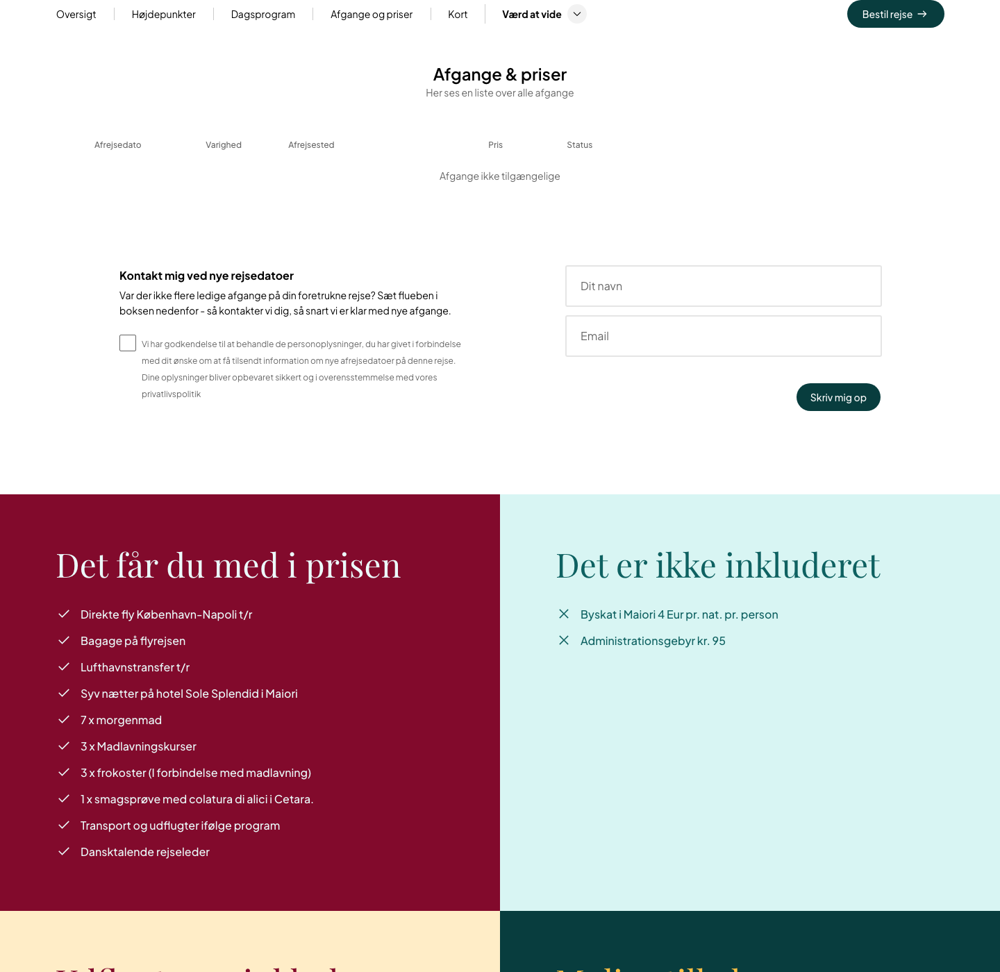
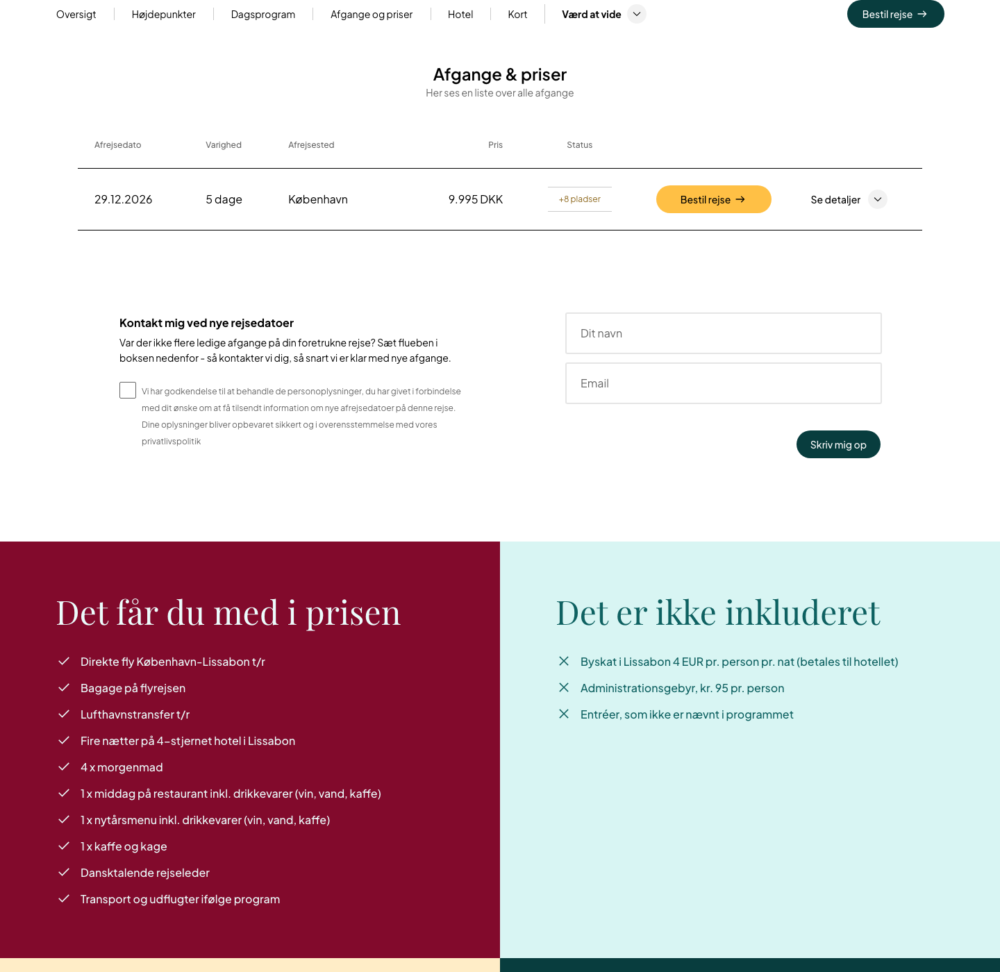
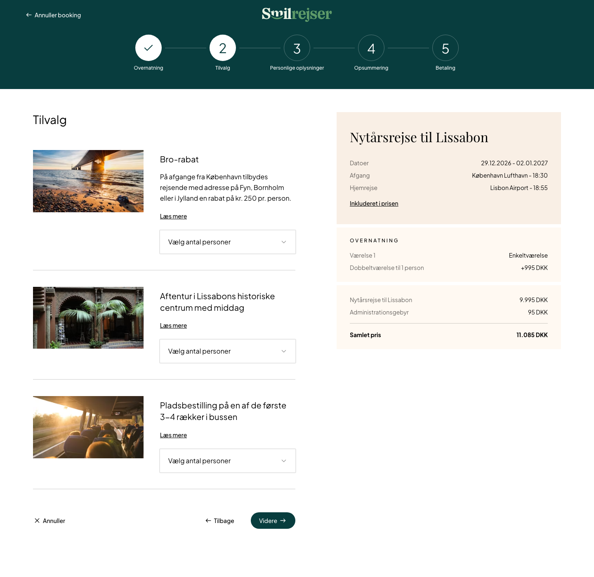
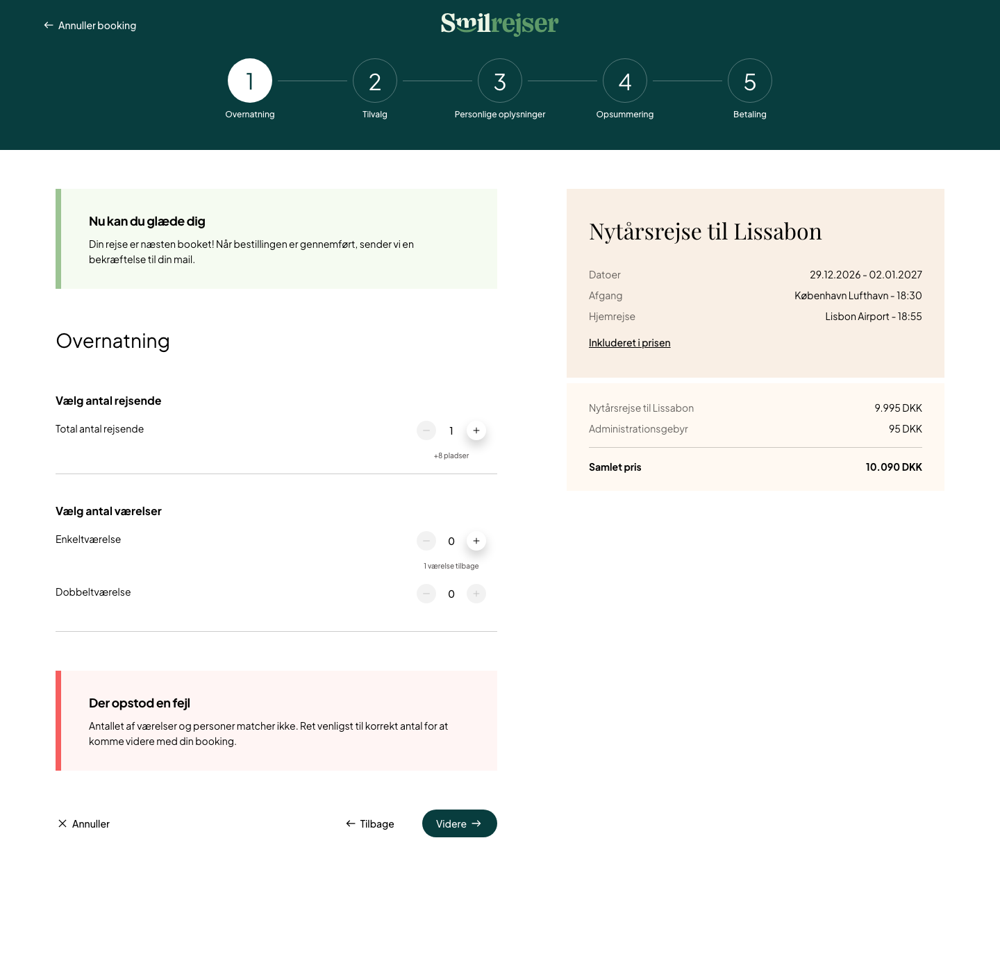
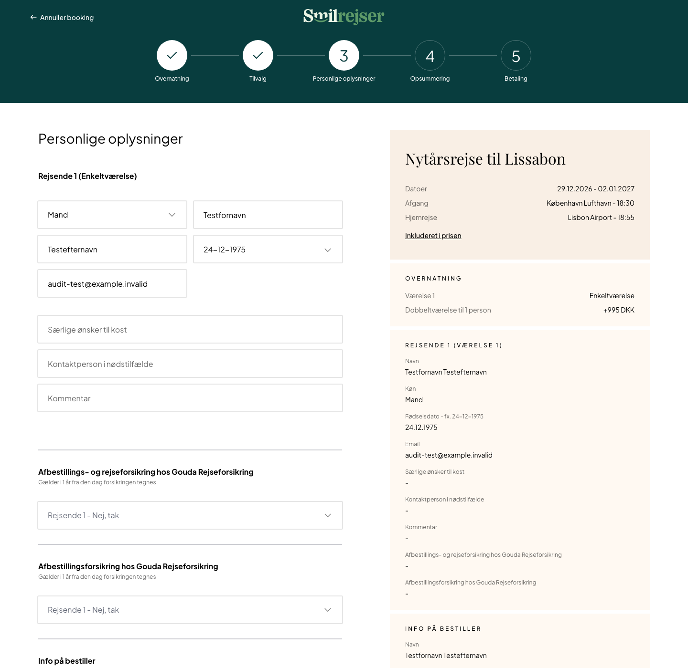
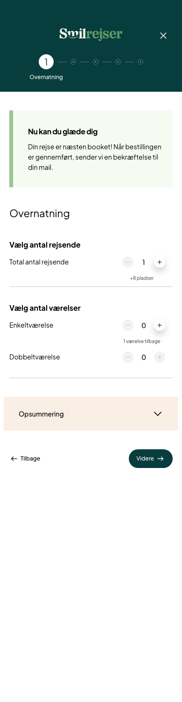

Seven in ten booking attempts stop before the customer types their name.
We checked all 421 pages, tried to make a booking ourselves, and matched what we found against 90 days of Google Analytics. The site is well built. Almost all of the lost revenue sits in two screens of the booking process, and we have the screenshots showing why.
Four numbers that frame the whole audit
Three of these come from Google Analytics, one from checking every page on the site. Where the data disagreed with our first impression, we went with the data — and on one point that changed the order of our recommendations.
Where the money actually leaks
Both drops happen exactly where we got stuck trying to book a trip ourselves: step 1, which shows an error before you have done anything wrong, and step 3, which asks for 27 pieces of information then rejects them in English. We found those walls first; the data then showed they are the two biggest losses in the process.
Why this is cheap to fix
The first four actions on our list come to about nine hours of developer time and all sit inside those two screens. None need new design, new trips to sell, or a decision from anyone outside the team.
The first four changes, nine hours of work in total
| Change | Where | Effort | Why it is first |
|---|---|---|---|
| Start the booking with one room already selected | Step 1 | 1 hour | Today every booking attempt opens on an error |
| Put the error messages into Danish | Step 3 | 1 hour | A Danish checkout currently says “Required”, three times |
| Mark the required fields as required | Step 3 | 5 hours | Nothing is flagged until the customer presses the button |
| Use one name for each room type | Step 1 and 3 | 2 hours | A single room is billed as “double room for one person” |
What we measured, and what we are not claiming
Every number in this deck comes from one of the six checks below, and each one can be run again to confirm it. Where we are estimating, the slide says so.
What we did
| What we checked | How |
|---|---|
| Every page | Visited all 421 pages and recorded prices, buttons, headings, images and load speed |
| Every trip | Checked each trip page for whether it actually has a departure a customer can buy |
| The booking process | Tried to book a real trip with fake details, recording every field and error on the way |
| What Google reads | Read the hidden data each page sends to search engines describing what it sells |
| The tracking setup | Read the site's tracking configuration to see which events are and are not being recorded |
| Real visitor behaviour | 90 days of Google Analytics, matched page by page to everything above |
evidence/ folder.Seven things we corrected in our own work
Two findings from our first pass were wrong, and we say so on the slides where they appeared. One more was withdrawn after Smilrejser corrected us. Four other numbers were revised as better evidence arrived. All seven are logged.
We mention it because it is the reason to trust the rest: every number here survived someone trying to break it.
What we are not claiming
- A conversion rate for any single page — 201 bookings in 90 days is too few to split that far
- Which trips people look at and click — the site does not record it yet
- Anything about search rankings — we have no Search Console access
- Anything about ad performance — no cost or return figures
- Why people give up — we can see where, not why. That needs session recordings
- That this pattern holds all year — our 90 days are one Danish summer
One thing to keep in mind on the revenue figures
Analytics credits a sale to the first page of the visit, not the page that persuaded the customer. So when we say a page type earns more per visit, that tells you where good visits start — useful for deciding where to send marketing, but not a measure of how convincing the page itself is.
Why we did not use Screaming Frog
It was the plan, but the licence on this machine is inactive and the free version cannot export or read pages that build themselves in the browser — which is how this site works. We wrote our own tool instead. That turned out better: it can answer the question that matters most here, which is whether a given trip can actually be bought today.
60 of 131 trip pages cannot be booked, and the page does not say so
The page looks complete — highlights, day-by-day programme, hotel, questions and answers. Then, where the dates and prices should be, one line of grey text. Almost half the catalogue is like this, though the data sizes the cost lower than that sounds.
What a visitor sees

1 · “Book trip” button 2 · …only scrolls down to here 3 · The only action: a waitlistWhy the “Book” button leads nowhere
| Can the customer buy? | Pages | Share |
|---|---|---|
| Yes — dates and prices shown | 69 | 52.7% |
| No — the dates table is empty | 60 | 45.8% |
| Unclear — nothing shown either way | 2 | 1.5% |
What it costs
These pages take 8.2% of all visits and earn 29% less per visit than pages you can buy from. Fixing it fully is worth roughly 1.4% of revenue.
The site promotes them equally
A trip you cannot buy gets 12 links from other pages; one you can buy gets 13. Nothing steers visitors away. The worst page draws 829 visits and sells nothing.
The fix already exists
The site already contains “Venteliste” (waiting list) and “Forespørg” (enquire) buttons. They are simply never shown on these pages. See proposal 1.
When a trip does have a departure, the design is genuinely strong
This matters for what we recommend. Where a trip does have dates, the table already shows everything a customer needs — date, length, airport, price, seats left, and a clear button. Nothing new has to be designed. The empty pages just need to reuse it.
Bookable — 69 pages

Date · length · airport · price · seats · buttonEmpty — 60 pages
Already right on the bookable state
- Scarcity is honest and specific — “+8 pladser”
- Price is shown inclusive, with the fee broken out
- Flight times are on the page before checkout
One inconsistency
The main button is amber inside the table but dark green in the bar at the top of the page — same words, two colours, competing for the same click.
Also worth noting
The waitlist form appears on bookable pages too, directly under a single available departure, where it competes with the sale.
Every destination page tells Google its trip list is “Trips to France”
Alongside the words a visitor reads, each page sends search engines a hidden summary of what it offers. On 103 country and city pages, that summary is titled “Rejser til Frankrig” — trips to France — including the pages for Porto, Marrakech, Madrid and Salzburg. One line of code, copied everywhere.
| Pages checked | Count | Title it sends |
|---|---|---|
| Country and city pages sending a trip list | 103 | “Rejser til Frankrig” |
| …of which the country is definitely not France | 70 | Same title |
| Individual trip pages — send no list at all | 131 | n/a |
A correction we owe you
Our first pass reported that 103 guide pages were wrongly telling Google they were products for sale. That was wrong, and re-checking it is how we found the real problem. Those entries correctly describe the trips each page links to. Only the title of the list is broken.
Why it matters
This is what Google uses to work out what each page offers, and every one of these pages tells it the same wrong thing. Everything else in the summary is correct, so a single line of code carries the whole problem.
The fix — one line
Use the destination name the page is already displaying at the top. A fixed default reading “Frankrig” suggests this was written while building a France page and never made dynamic.
Found at the same time — three different things share one address format
131 are real trips
They show a dates-and-prices section. 76 of them display a price.
101 are city guides
Nothing for sale on them. The address /italien/milano looks exactly like a trip address, but it is a 1,763-word guide to Milan.
18 are near-empty pages
Under 500 words each; the thinnest has 130. They compete in search against the trips they ought to be promoting.
We booked a real trip with fake data, and stopped before paying
We booked a New Year trip to Lisbon at 9.995 DKK, using fake customer details. There are five steps. We reached step 3 and stopped — going further would place a real order and hold a real seat.
| # | Step | Fields | Price shown | What we found |
|---|---|---|---|---|
| 1 | Overnatning — rooms | 0 | 10.090 DKK | Opens showing an error — finding 4 |
| 2 | Tilvalg — extras | 0 | 11.085 DKK | Works well. Three extras, full price breakdown |
| 3 | Personlige oplysninger — details | 27 | 11.085 DKK | Does the work of three steps — finding 5 |
| 4 | Opsummering — summary | — | — | Not entered. Measured on the next slide |
| 5 | Betaling — payment | — | — | Not entered. Measured on the next slide |
What the booking process gets right
Five clearly named steps with a progress bar. A running price panel that updates as you choose. The administration fee shown as its own line rather than hidden. Honest pricing throughout.
Why we stopped at step 3
Two fields would not accept input from our script — gender and date of birth. A real customer fills these in seconds, so this is a limitation of our automation rather than a fault on the site. Steps 4 and 5 are covered on the next slide using analytics instead.

Full breakdown No price on the cardOne thing visible in the summary panel on every step from 1 onward
It reads “Room 1 — single room”, and directly beneath, “double room for one person — +995 DKK”. The same room, named two different ways, one line apart, exactly when the customer is deciding whether 995 DKK is worth paying.
Both walls we hit are the two biggest losses in the whole process
2,516 people started a booking between 30 May and 27 August. 159 finished. We count people, not page loads — otherwise someone retrying a form that keeps rejecting them would look like progress.
and number of travellers
can be skipped
27 fields
review the order
not a required step
the sale
What the customer meets at each drop, and what it costs to fix
| Where | What the customer meets | Effort | Action |
|---|---|---|---|
| Step 1 | 1 traveller but 0 rooms, and no warning until the button is pressed | 1 hour | 1 |
| Step 1 | The same room named two different ways, 995 DKK apart | 2 hours | 3 |
| Step 3 | 27 fields in one screen, three errors written in English | 1 hour | 2 |
| Step 3 | Required fields are not marked, so nothing is flagged until you submit | 5 hours | 4 |
The convergence is the point
We went through this booking process before we had any analytics, and got stuck twice: at step 1, because it starts with one traveller but no rooms selected, and at step 3, because it rejects the form without saying which field is wrong. Those are exactly the two steps where 71% and 69% of people leave. The next two slides are photographs of where the revenue goes.
Why payment is not a third big drop
More people reach the confirmation than the payment page — 159 against 117 — which is impossible if everyone passes through both. Payment is almost certainly handled on the card provider's own site, with customers returning straight to the confirmation. So the apparent drop at step 5 is not real, and we would confirm the flow with the developers before anyone acts on it.
Not all of that 71% is a fault
Some people click Bestil just to see the price, with no intention of buying. But on average each person loads step 1 about 1.6 times and the summary step about 1.7 times, which is what it looks like when people submit a form and get bounced back. Part of that 71% is browsing. Part of it is being turned away.
Step 1 of the booking cannot be submitted as it appears
The page starts with 1 traveller and 0 rooms selected. Those two things contradict each other, so every customer gets an error on their first click — and only finds out after pressing the button.

Travellers: 1 Rooms: 0 and 0 The error, only after clickingThe error, verbatim
The fix — under an hour
Start the page with one traveller and one single room already selected. Better still, keep the Continue button switched off until the numbers add up, and explain why next to the room choice, so the customer never sees a red error at all.
Two smaller things on this step
The page offers to cancel twice, top-left and bottom-left, while the button that continues the booking is a modest green one. And the plus and minus buttons have no text at all, so they cannot be used by anyone relying on a screen reader or voice control.
Worth saying out loud
This is the cheapest item in the audit. It sits on the first step of the only route to a sale, it affects every booking attempt, and the fix is changing which options are pre-selected.
One step asks for 27 things, then rejects them in English
Step 3 does the work of three: traveller details, billing details, two insurance products, a discount code, payment choice and consent. Submit it empty and it answers “Required” — three times, in English, on a Danish site.

Two almost identical insurances Single room, billed as a doubleWhat step 3 contains
| Group | Fields | Note |
|---|---|---|
| Traveller details | 8 | Name, date of birth, diet, emergency contact |
| Billing details | 9 | Name, address, postcode, city, phone, email |
| Insurance | 2 | Two products with almost the same name |
| Discount code | 1 | Sits in the middle of the form |
| Payment choice | 3 | Three options |
| Consent | 2 | Terms and marketing |
| Other | 2 | Existing customer, and “how did you hear about us?” |
The two insurances
“Cancellation and travel insurance” sits directly above “Cancellation insurance”, both pre-set to “No thanks”. One word tells them apart, so most customers will take neither.
The room naming
The customer picks a single room. The summary bills it as a double room for one person, +995 DKK. The same thing, two names, at the moment of payment.
Fixes, cheapest first
Put the error messages into Danish. Mark the required fields as required. Split step 3 into traveller and billing. Move the discount code into the summary panel. Use one name for the room.
On a phone, the price disappears during the first two booking steps
On a computer the running total sits next to the form. On a phone it hides behind a button — so the customer picks a room without seeing what it costs them.

Adds 995 DKK Total collapsed in here| Booking step | On a computer | On a phone |
|---|---|---|
| 1 Rooms | Price visible — 10.090 DKK | No price on screen |
| 2 Extras | Price visible — 11.085 DKK | No price on screen |
| 3 Customer details | Price visible | Price visible |
| Progress bar | All five steps named | Only step 1 is named; the rest are bare numbers |
Why it matters here
Choosing a single room adds 995 DKK between step 1 and step 2. On a phone that increase happens out of sight, and the customer first meets it at payment.
The fix — one to two days
Fix a slim bar to the bottom of the phone screen showing the running total, with a tap to see the breakdown. And show the step names again, or at least “step 3 of 5”.
The desktop version of this is a genuine strength
On a computer the header names all five steps in order — 1 Overnatning · 2 Tilvalg · 3 Personlige oplysninger · 4 Opsummering · 5 Betaling — so the customer always knows where they are and how much is left. That is exactly right, and it is why this finding is about the phone only. The phone build simply drops four of those five labels.
The site tells the browser to load its main images last
Delaying images until they are scrolled into view is good practice — for images further down the page. Here it is applied to 13,321 of 13,448 images, including the main photograph on every page and the logo itself. Nowhere on the site is the browser told which image matters most.
| Page type | Pages | Server response | Page weight |
|---|---|---|---|
| Holiday type — e.g. walking holidays | 21 | 2.1 s | 1,050 KB |
| Trip page | 250 | 1.3 s | 636 KB |
| Homepage | 1 | 1.3 s | 2,612 KB |
| Blog post | 67 | 1.2 s | 329 KB |
| Country page | 54 | 1.1 s | 581 KB |
The homepage, in its own code
The fix — a day, mostly in one component
Tell the browser to load the main photograph and the logo first on each page type, and leave every other image as it is. Then stop loading the Trustpilot widget ahead of the site's own code.
Also: 4,167 images have no text description
That is 31% of all images. It matters twice over: customers using a screen reader get nothing, and Google loses the only clue it has about what the photographs show. These can be generated in bulk from the captions and trip names the site already has, so it is not a manual job.
The best entry points to the site get the least traffic
Revenue per visit, by the page the visit started on, compared against a bookable trip page. Someone who arrives on a browsable list is worth far more than someone dropped onto a single trip — and lists get a fraction of the traffic.
| Where the visit started | Pages | Visits | Share | Revenue per visit |
|---|---|---|---|---|
| Homepage | 1 | 8,168 | 12.7% | 5.0× |
| Holiday-type pages | 21 | 2,298 | 3.6% | 2.7× |
| Country pages | 54 | 4,479 | 7.0% | 1.5× |
| Trip pages you can book | 69 | 26,511 | 41.3% | 1.0× |
| City guides | 101 | 8,611 | 13.4% | 0.8× |
| Trip pages you cannot book | 60 | 5,297 | 8.2% | 0.7× |
| Blog posts | 67 | 4,118 | 6.4% | 0× |
What to do with this
Holiday-type and country pages together take just 10.6% of visits, yet they are the two strongest entry points after the homepage. They are also the easiest pages to point advertising at. Before building anything new, we would move some marketing spend from individual trips towards these pages and measure it against the figures above.
The blog earns nothing at all
67 posts, 4,118 visits, 6.4% of all traffic, and not one krone of revenue in 90 days. It also holds people's attention for the shortest time of anything on the site — 63 seconds, against 204 on the homepage.
Part of the reason is that the blog is barely connected to the rest of the site: a typical post has just one link pointing to it, and posts rarely link forward to a trip anyone can buy. Readers arrive, read, and leave.
We are not recommending you delete it
Earning nothing on record is not the same as being worth nothing. Analytics credits the sale to the last thing a customer did, so a reader who comes back two months later to book will never show up here. What this does tell us is that the blog is not currently helping to sell, and that adding trip links to the best-read posts is a far cheaper test than commissioning more writing.
One broken page, 432 wasted visits
The address /italien/trentino-og-dolomitterne no longer exists, and 432 visits still arrived at it. Nineteen other dead addresses also get traffic, but only one or two visits each — so a single redirect recovers 86% of the loss.
Four things we went looking for and found already done properly
This is not padding. It changes what we recommend, because the foundations are sound, so the fixes are adjustments rather than a rebuild. Any agency telling you this site needs replacing has not looked at it properly.
The tracking setup is genuinely advanced
One shared setup serves ten Aller travel brands, correctly sending each site's data to its own analytics account. Smilrejser's runs through its own server, which we tested and found healthy. Cookie consent is handled properly, and customer details sent to advertising platforms are encrypted before they leave the browser. This is better than most travel sites we audit.
Nearly all the sales tracking already exists
Every stage of a purchase is already being recorded — viewing a trip, starting a booking, entering payment details and completing the sale — along with gift cards, site searches, phone clicks and email clicks. Waiting-list signups are tracked too, which means the empty-trip problem in finding 1 can be measured from day one without any new work.
What the site tells Google is well built
Every trip page correctly describes itself to search engines as a product with a price, and 56 of them also supply their questions and answers, which can win extra space in search results. Guide pages correctly describe themselves as destinations instead, rather than pretending to be products. Finding 3 is one wrong line inside an otherwise well-made system.
Trust and price transparency
Trustpilot, the Danish travel guarantee fund and Travelife appear on all 421 pages, and so does a phone number. The booking process shows the administration fee as its own line and a genuine total, with no surprises at the end. And all 421 pages load correctly and are structured properly — not one broken page anywhere on the site.
And one thing we suspected, checked, and were wrong about
Our first screenshots showed the cookie banner in Norwegian on a Danish site, which looked serious. It was not: the banner follows the visitor's own browser language, and ours was set to Norwegian. Run again in Danish, the banner is correct. We logged it as a rejected finding and re-took every screenshot in this deck with a Danish browser.
Nine hours of work sits against the two steps where 91% of bookings are lost
Nothing in part one was a criticism of how the site was built. It is well made and well measured, and its biggest problem is not structural at all — it is two forms that turn people away without telling them why. That is where we would start, and the analytics are the reason we changed the order.
Unblock the booking process
Stop step 1 opening on an error, put the error messages into Danish, and use one name per room. Around nine hours of work, against 2,293 lost booking attempts.
Make the catalogue honest
Give the 60 unbuyable trips something a customer can actually do, redirect the broken page taking 432 visits, and show prices consistently.
Follow the money upstream
Start recording which trips people see and click, then test moving marketing spend towards the page types that already earn the most per visit.
Give the departures table four states instead of two
Today the table is either a sale or a blank. The rule we would apply: every trip page must offer exactly one clear next step. Three of these four options already exist in the site's code — they are simply never shown.
What we would not do
We would not take the 60 pages down. They hold 151,722 words that bring in search traffic and inform customers. The aim is to turn that traffic into enquiries and waiting-list signups, not to throw the asset away.
| Situation | What the customer can do | Already built? |
|---|---|---|
| Dates available | Book the trip | Live today |
| On request | Send an enquiry | Built, never shown |
| Sold out or no dates yet | Join the waiting list | Built, never shown |
| Empty table | Nothing at all — remove this case | 60 pages today |
Rules we would hold to
- Never show a table of dates with no dates in it
- Always show a price, even as “from …”, so customers can compare
- Every trip page links to trips in the same place that can be booked
- Say when new dates are expected, not just that there are none
Where the work happens
In the dates-and-prices section of the trip page, plus whatever feeds it from the booking system. The waiting-list form is already built and already tracked, so you can measure whether this works from the first week.
Eight changes to the booking process, ready to hand to a developer
The booking process is well designed — five clear steps, a running price, honest totals. These are faults sitting on top of that good design, listed cheapest first. The first three take barely half a day between them.
| Where | Today | Proposed | Effort |
|---|---|---|---|
| Step 3 error messages | “Required”, in English | Danish, and say which field is missing | 1 hour |
| Step 1 starting state | 1 traveller, 0 rooms — errors on first click | One traveller starts with one single room | 1 hour |
| Room naming | A single room is billed as a double | One name per room, everywhere it appears | 2 hours |
| Steps 1–2 on a phone | No price on screen | A fixed bar at the bottom showing the running total | 1–2 days |
| All 27 fields | Not marked as required, so nothing is checked early | Marked properly, so problems surface as you type | 3 hours |
| Plus/minus buttons | No text, so screen readers cannot use them | Labelled “add a traveller” and similar | 2 hours |
| Insurance | Two almost identical options, both pre-set to “no thanks” | One comparison: what each covers and costs, side by side | 1–2 days |
| Discount code | An open invitation to go hunting for a code, mid-form | A small link in the price panel instead | 3 hours |
Order of work
The top four are a single afternoon and only change wording and starting values. Nothing moves on the page, so no design review is needed.
What we deliberately left out
We are not proposing fewer steps. Five steps with a visible running price suits an expensive, carefully considered purchase. The problem is how much step 3 asks for, not the number of steps.
Measured, but not seen
We now know how many people reach steps 4 and 5 — 223 and 117. We have still not looked at them, because getting there places a real order. Both need reviewing on a test copy of the site before we recommend anything.
Two missing measurements stand between you and knowing what this costs
The site already measures nearly everything. The one thing it cannot tell you is how many people see a trip they cannot buy and give up — because the two measurements that would show it are the two that are missing.
| What could be measured | Set up? | What it tells you |
|---|---|---|
| Someone views a trip | Yes | Which trips get looked at |
| Someone starts a booking | Yes | Intent to buy |
| Someone enters the booking process | Yes | Who begins buying |
| Someone moves between steps | Yes | Where people stop |
| Someone reaches payment | Yes | Nearly-closed sales |
| Someone completes a booking | Yes | Revenue |
| Which trips appear in a list | No | Which trips customers are actually shown |
| Which trip a customer clicks | No | How many clicks land on the 60 trips nobody can buy |
What we still need from you
Google Analytics access has arrived and is used throughout this deck. Three things are still outstanding: Search Console, so we can see search performance; a phone-versus-computer breakdown of the booking process, to size finding 6 properly; and a full year of data, to check whether the summer pattern holds.
Some tidying up we found
Nine leftover settings from the previous version of Google Analytics are still in the configuration. That system stopped working in 2023 and the current one expects a different format, so anything still reading them is reading nothing. Three switched-off items also need a decision: revive or delete.
One caution on making these changes
The same tracking setup serves ten Aller brands, so every change goes live for all of them at once. These edits need a test version, a preview and a named approver — not a quick change made directly on the live site.
Everything we found, ordered by value per hour of work
The order is set by what 90 days of real visitor data says it is worth, not by our judgement. That moved four items up and two down.
| # | Action | Where | Effort | Impact | What the data says |
|---|---|---|---|---|---|
| 1 | Start step 1 with one room selected, so it never opens on an error | Booking | 1 hour | Critical | 1,796 people lost here |
| 2 | Put the error messages into Danish and name the missing field | Booking | 1 hour | Critical | 497 people lost at step 3 |
| 3 | Use one name per room type wherever it appears | Booking | 2 hours | Critical | Step 1 is loaded 1.6× per person |
| 4 | Mark required fields as required; label the +/− buttons | Booking | 5 hours | Critical | Part of the 497 lost at step 3 |
| 5 | Keep the price on screen on phones, steps 1–2 | Booking | 1–2 days | Critical | Needs a device split to size |
| 6 | Redirect the 20 dead addresses still receiving visits | Routing | 1 hour | High | New — 501 visits wasted |
| 7 | Rewrite the insurance choice as one clear comparison | Booking | 1–2 days | High | Sits inside the 69% loss at step 3 |
| 8 | Replace the empty dates table with enquiry and waiting-list | Trip pages | 3–5 days | High | 8.2% of visits, ~1.4% of revenue |
| 9 | Start measuring which trips people see and click | Tracking | 1 day | High | The last blind spot on the site |
| 10 | Point marketing at country and holiday-type pages | Marketing | 1–2 days | High | New — 2.7× revenue per visit |
| 11 | Link the 10 best-read blog posts to trips people can book | Content | 1 day | High | New — 4,118 visits, zero revenue |
| 12 | Show a price on every trip page, “from …” if exact is unknown | Trip pages | 1 day | Medium | 55 of 131 pages show no price |
| 13 | Fix the “Rejser til Frankrig” label on 103 pages | Templates | 1 hour | Medium | Affects search, not visits |
| 14 | Load the main image and logo first on every page type | Templates | 1 day | Medium | No measurable harm visible yet |
| 15 | Generate text descriptions for 4,167 images | CMS | 2–3 days | Medium | Accessibility, not sales |
| 16 | Tidying — search snippets, unlinked pages, old settings | CMS | 4 days | Low | Demoted — 273 visits |
The first 90 days, and what is different at the end of each
Ordered so the cheapest fixes go live first, aimed at the steps where the data shows the losses. Nothing expensive gets decided until we can see whether the cheap work moved the numbers.
- Actions 1–4: the step-1 starting state, Danish error messages, room naming, required fields
- Action 6: redirect the 20 dead addresses
- Record today's 71% and 69% first, so the improvement can be proven
Result: nine hours of work aimed at the two steps where 2,293 of 2,516 booking attempts currently end, plus an hour of redirects.
- Action 8: give all 60 unbuyable trips a real next step
- Actions 5 and 7: the price on screen on phones, and the insurance choice
- Actions 9 and 12: the two missing measurements, a price on every trip page
Result: every trip page offers the customer something to do, and you can finally see which trips get seen and clicked.
- Re-measure the booking process and compare it against phase 1
- Actions 10–11: test where marketing points, and link the blog to bookable trips
- Run this whole audit again and compare it with today
Result: the first decisions made on a measured before-and-after, rather than on anyone's ranking.
One limit we want to be explicit about
Our data covers 90 days of one Danish summer and contains 201 bookings. That is plenty to compare groups of pages and to read the booking process with confidence. It is not enough to quote a conversion rate for any single page, and we have not quoted one anywhere in this deck. It also means the honest test of phase 1 is a before-and-after on the booking steps themselves rather than a revenue figure, which is why phase 1 records today’s numbers before anything ships.
Nine hours of work sits between 2,516 booking attempts and 159 bookings
Smilrejser has 35 years of trips, better measurement than most of its competitors, and 2,357 people a quarter who start a booking and never finish it. The work here is not building something new. It is fixing two forms that turn people away without telling them why.
This week
Actions 1–4: nine hours, all inside booking steps 1 and 3, plus an hour of redirects.
Weeks 2–6
A real next step on all 60 unbuyable trips, the price kept on screen on phones, the two missing measurements.
Weeks 6–12
Re-measure the booking process against today's 71% and 69%, then test where marketing points.